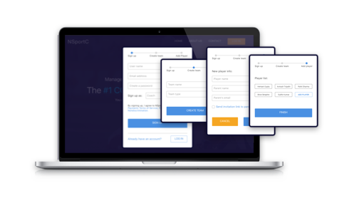
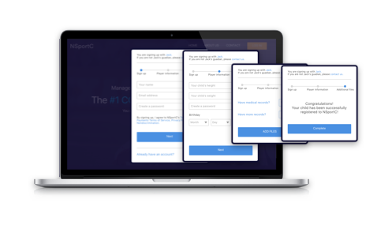
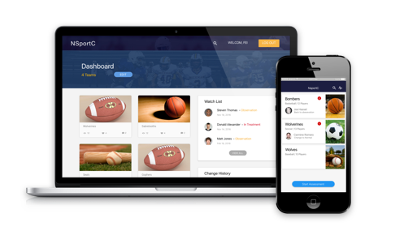
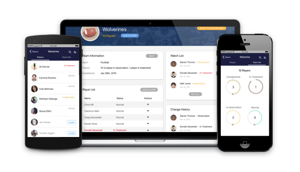
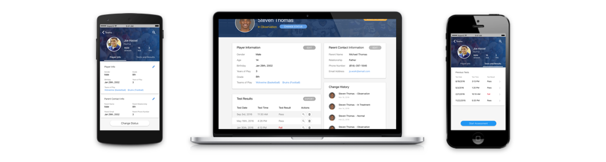
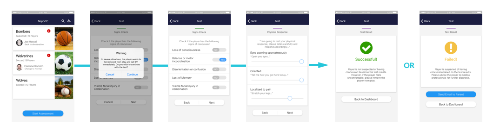

Simulate the Experience:
Hi-fidelity Prototype
I selected Sketch as our main design tool because of its easiness to use. Due to the tight deadlines we have, I divided the team into two small teams - web team and mobile team - each has three designers. Each team was working closely internally and communicating with the other team constantly in order to unify design styles. Fortunately Sketch has the ability to create symbols and layers to reuse UI components. After both small teams finished the first version of the hi-fidelity prototype design, all six designers discussed together and gave each other feedback for design iterations.
Simplify Registration

Coaches will be able to register through our website. The first step is to register with the coach's email address and create a password. Then the coach needs to create a sports team by typing in "team name" and "sports type". The last step is to add all player and their parents' email addresses. Our product will automatically email invitations to the parents for registering their children.

Parents will only be able to register through invitations sent by coaches. Once the parent clicks on the invitation link, the parent will be directed to the registration page where he or she needs to register with an email as well and type in the player's demographical information. Once all steps are completed, the player is successfully registered on NsportC system.
Streamline Information Flow

The dashboard page serves as a central information hub. The coach is able to view all teams as well as new changes or new test results. Furthermore, the coach is able to add or delete teams on this page.Clicking on any team, the coach will be directed to the team page of the team.

The team page shows a list of all players in this team as well as the team information. The coach can change the team's name and add/delete players on this page. "Not registered" player will be grayed out, but the coach can choose to resend an invitation to the player's parent.
Organize Player Information

A player's information can be divided into two parts - demographical information and test results. The coach will be able to edit a player's demographical information as well as view or export all previous test results. On the mobile application, the coach will be able to conduct assessment tests for the player. If the player is just registered, the coach or the parent should conduct the benchmark test; after completing the benchmark test, the coach will be able to run assessment test if an incident happens.
Standardize the Assessment

Once the assessment test started, a warning message will jump out telling the coach that "if the player is obviously injured, there is no need to do the test. The player needs to be taken to medical professionals as soon as possible". If the coach decides to continue with the test, then the application will ask the coach to check if the player has concussion symptoms. Then the assessment will walk the coach through basic questions, cognitive questions, and balance tasks, with specific instructions of how to ask (for example, "now I'm going to test your physical response, tell me know you got here today...")
After finishing all assessment questions with 3 minutes (less than 5 minutes), the mobile app will determine whether the test is passed or failed based on comparison between the assessment test and the player's benchmark test. If the test is failed, our product will advice the coach to remove the player from play and send the player to medical professionals for further diagnosis. There will also be a shortcut button to send an email to let the player's parent know the situation.